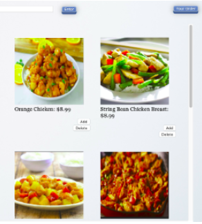

- We improved our UI design. We changed the background images and the buttons color.
- We fixed the bug in the search box. Search box doesn’t work in PM5
- We removed “Back” button in PM5. And we keep the navigation menu and the search box in the main page in PM7.
- We changed the size of the buttons in the navigation menu.
- The main page cannot scroll in PM5. We make our main page scrollable in PM7. 